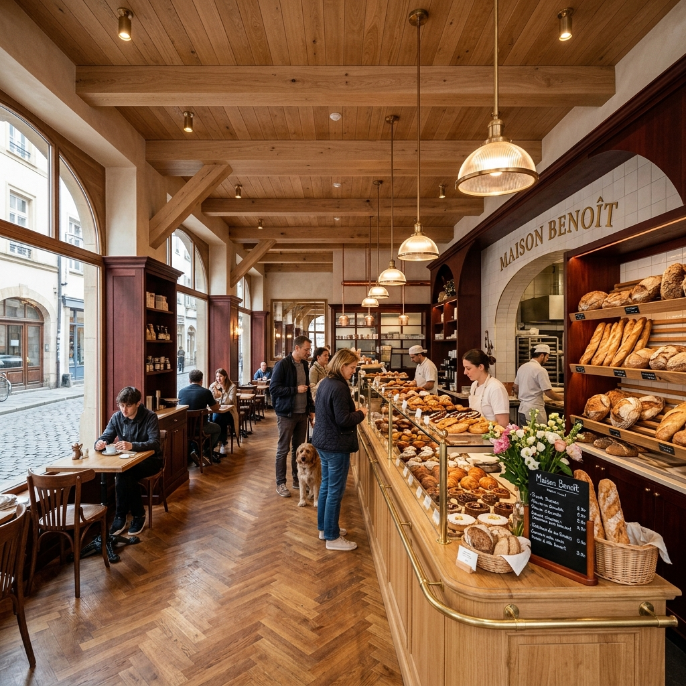
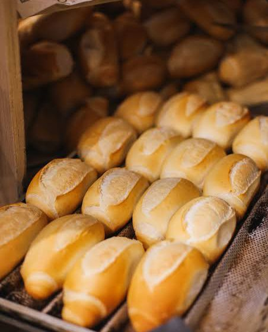
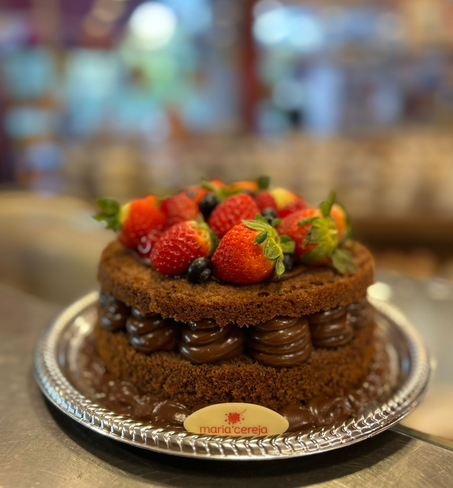
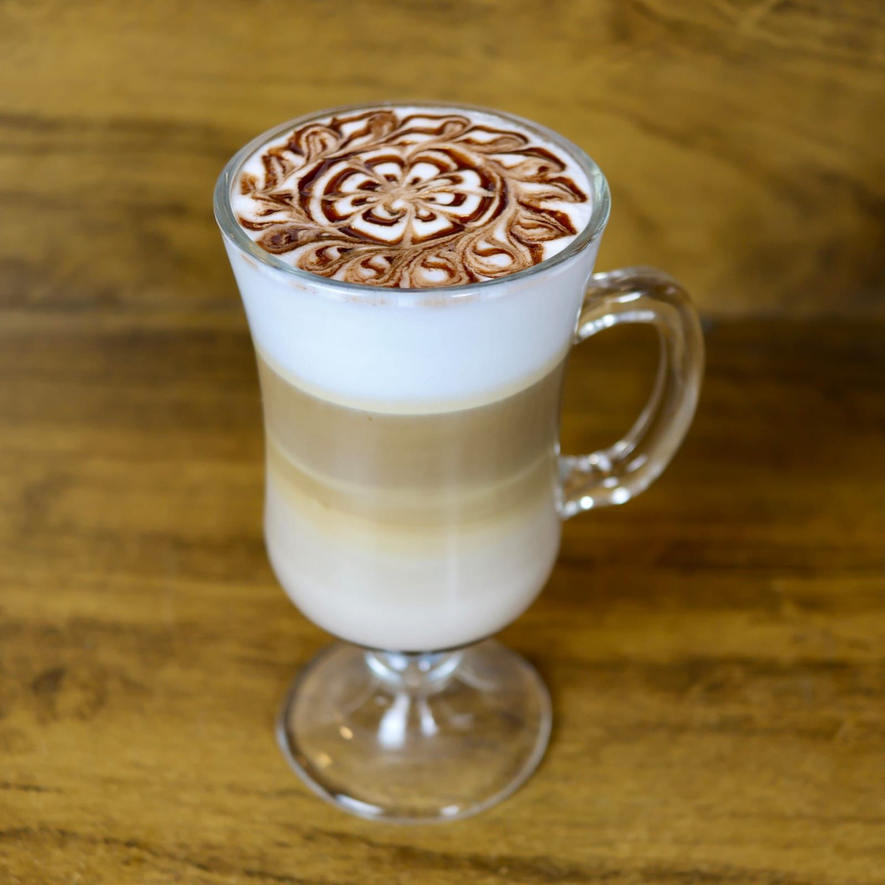
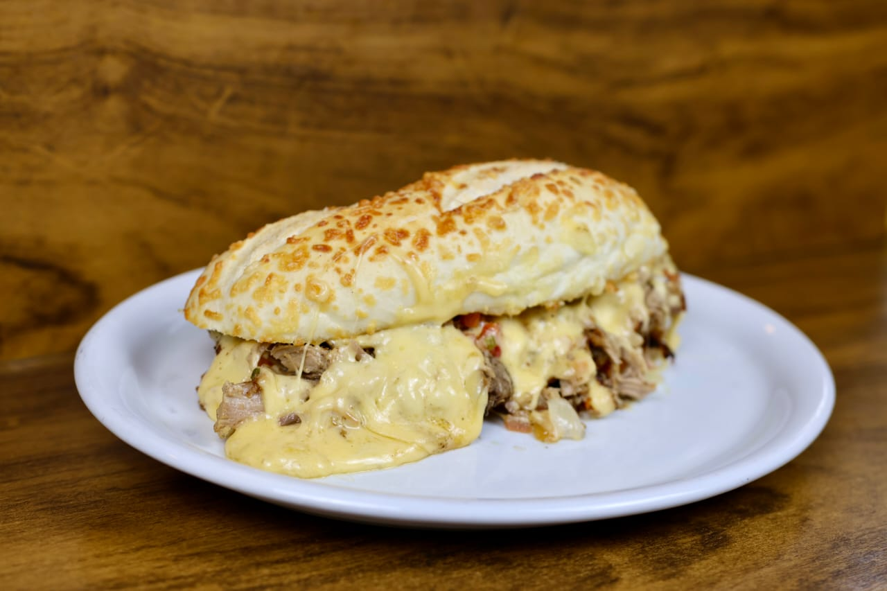
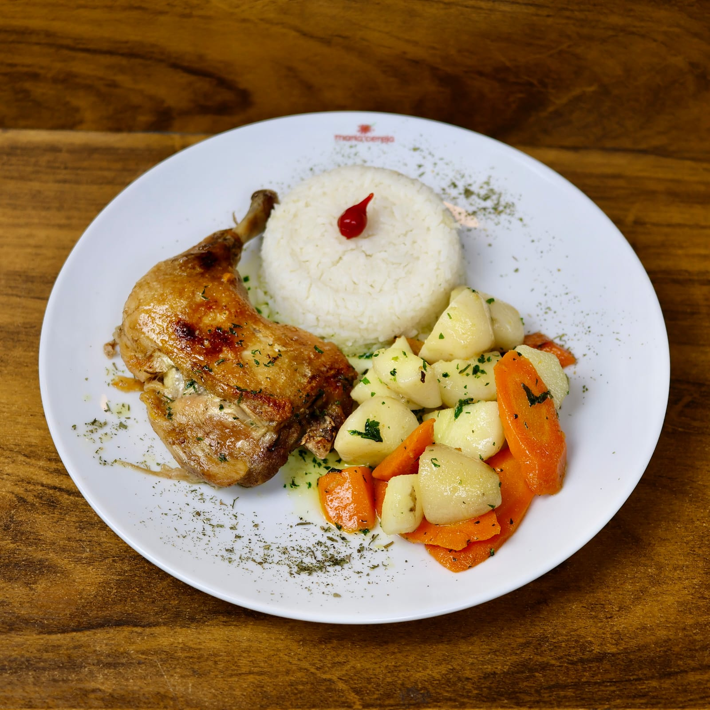
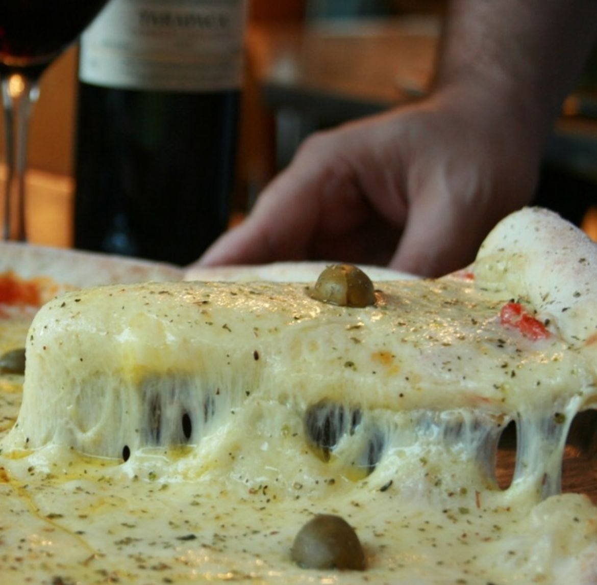
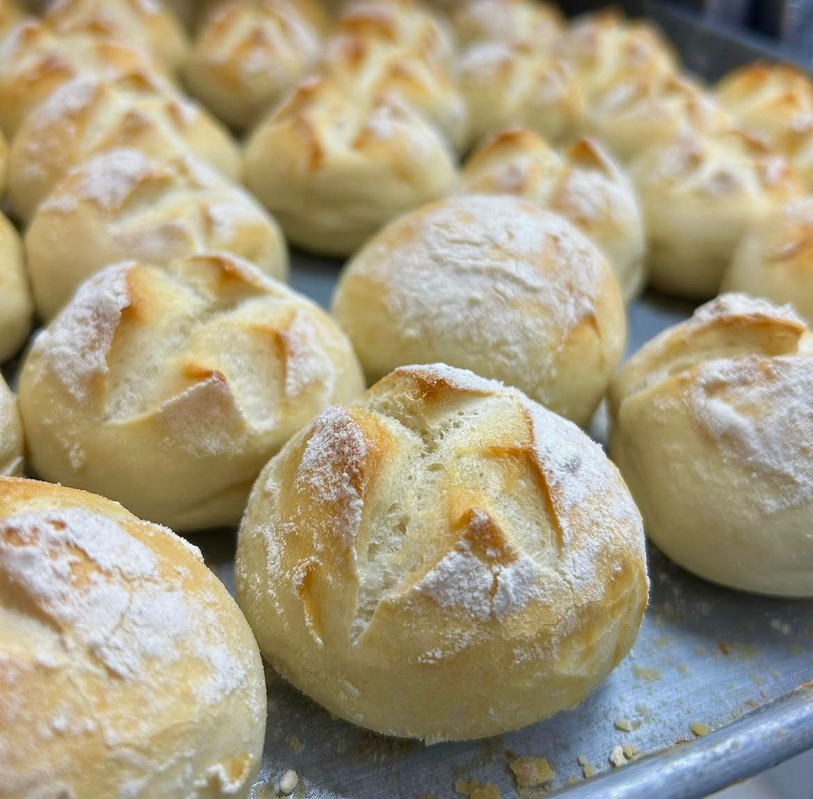
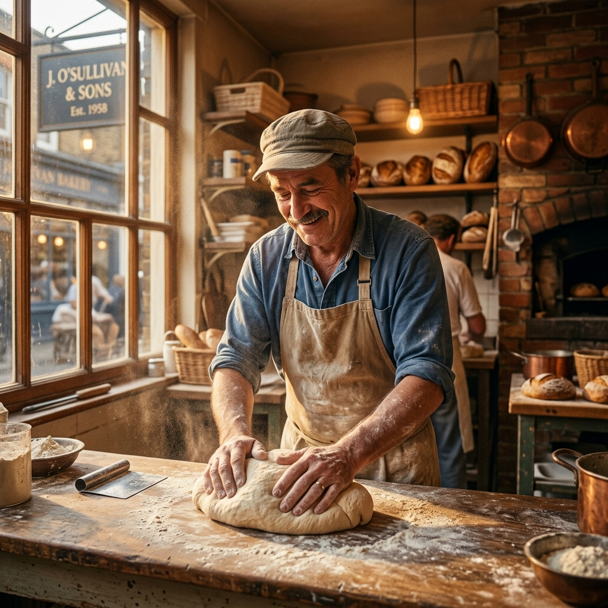

Guarulhos se encontra aqui.
Tradição, qualidade artesanal e sofisticação desde 1992. Sua experiência premium em padaria, confeitaria e muito mais.
Nossas Especialidades
Momentos inesquecíveis pedem sabores extraordinários.

Padaria
Pães de fermentação natural, assados diariamente com a crocância perfeita e miolo macio.

Doceria
Como tudo começou! Clássicos Maria Cereja.

Café
Um cafezinho pra começar, pausar ou finalizar o dia é tudo que a gente precisa.

Lanchonete
Lanches de todos os tipos e para todos os gostos.

Restaurante
Venha provar os mais variados pratos individuais, executivos, omeletes e saladas.

Pizzaria
Dizem que nossas pizzas são incríveis. Melhor ainda se pedidas direto no balcão!

Corporativo
Quer levar pra casa ou trabalho nossos deliciosos lanches de metro, tábuas de frios, mini recheados, bolos e muito mais? Chame a gente no WhatsApp e solicite um orçamento!

Nossa História
No ano de 1992, a Maria Cereja iniciou suas atividades em uma pequena loja de sobremesas na Av. Paulo Faccini, com apenas oito funcionários. A loja foi muito bem aceita e o sucesso, imediato. Seis anos depois, com o crescimento da clientela, surgiu a necessidade de ampliar, e em 1998 foi inaugurada a nova loja, em um trecho muito mais charmoso da cidade. Sucesso novamente. Alguns anos se passaram e, acompanhando as tendências do mercado, percebeu-se na região, a necessidade de um local que oferecesse maiores opções de alimentação. E no ano de 2005, nasce então a Maria Cereja Confeitaria, Pães e Lanches.
Hoje a Maria Cereja é considerada um dos lugares mais tradicionais da cidade, e é difícil eleger um rótulo que a defina, já que ao mesmo tempo é padaria, doceria, lanchonete, restaurante, loja de conveniência, pizzaria e fornecedora de eventos particulares e corporativos, tudo isso utilizando produtos de ótima qualidade e atendimento personalizado.
Em 2006 recebeu o Prêmio Destaque Empresarial pela ACE (Associação Comercial e Empresarial de
Guarulhos).
Em 2010 ficou entre as 10 melhores padarias de São Paulo, sendo homenageada em cerimônia
promovida pelo Sindicato da Panificação de São Paulo e em 2026 ficou em segundo lugar na
Categoria de Melhor Padaria de Guarulhos pelo Padocaria SP.
A cada ano que passa, faz valer seu slogan que diz: “Guarulhos se encontra aqui”, pois além de ser um lugar onde as pessoas se reveem, é também um lugar onde o guarulhense se sente em casa!
Leve a Maria Cereja para sua casa
Seja para um café da manhã especial, uma festa inesquecível ou o jantar de hoje. Estamos a um clique de distância.